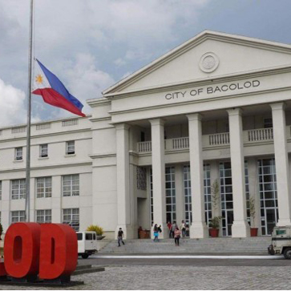
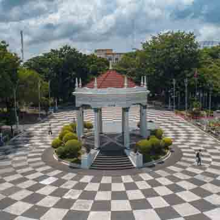
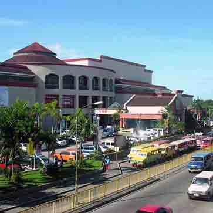
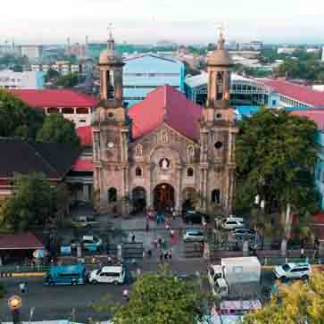
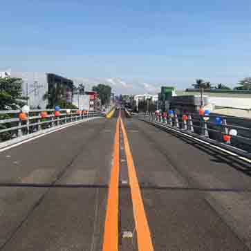

Bacolod City seen as region's model in Covid-19 response.
Bacolod City Government Center.

Bacolod The Ruins, San Sebastian Cathedral, and City Tour- Klook Philippines.

Downtown Bacolod City Philippines.

San Sebastian Cathedral.
Caribbean WaterPark & Resotel, Bacolod City.

Flyover along Araneta Avenue crossing Magsaysay Avenue opens in Bacolod City.
 DPWH Completes 2 New COVID-19 Facilities in Bacolod City.
DPWH Completes 2 New COVID-19 Facilities in Bacolod City.
AllHome opens 53rd branch in Bacolod City.